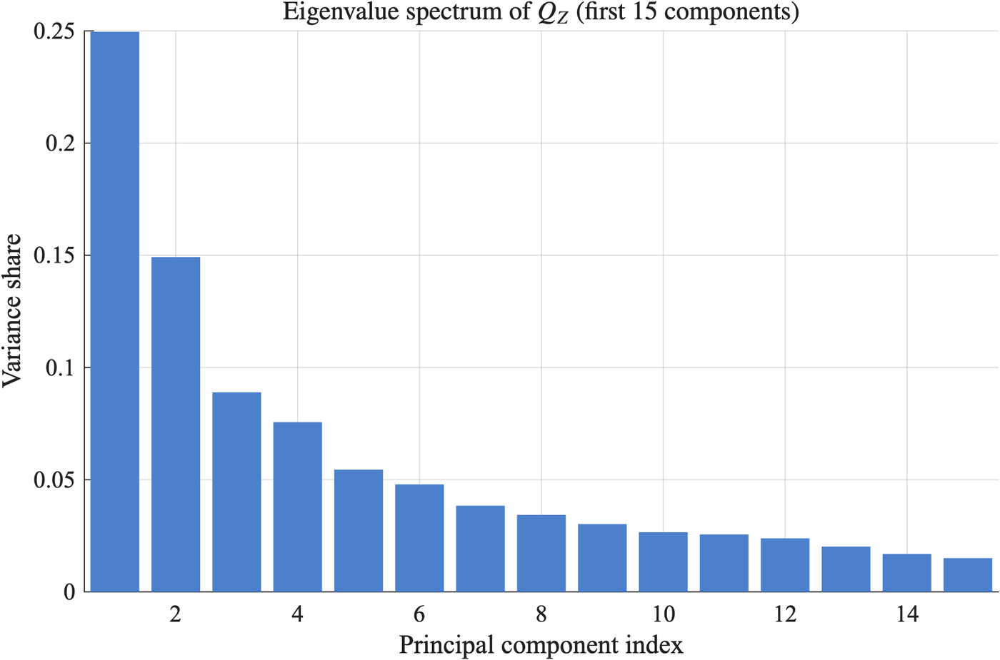
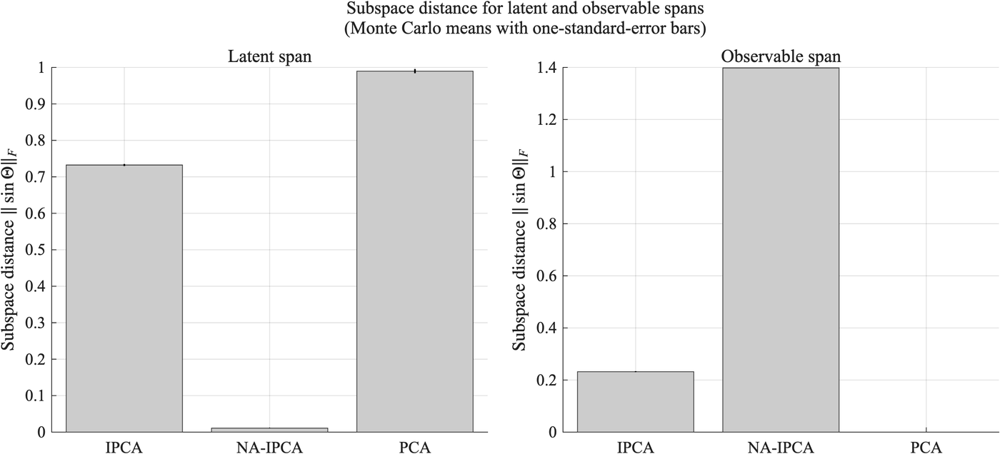

palette = ({
naipca_iab: "#18557f", complete: "#18557f",
qz_ipca: "#8a6a1a",
ipca: "#6f9cc0", rp_pca: "#7a7a7a", ff5: "#b3b3b3",
naipca_beta_only: "#8a8378", beta_only: "#8a8378",
band: "rgba(0,0,0,0.06)", muted: "rgba(0,0,0,0.6)", rule: "rgba(0,0,0,0.1)"
})
LANG = (document.documentElement.lang || "en").startsWith("zh") ? "zh" : "en"
STR = ({ en: { view: "View", cost: "Cost (bp per traded dollar)", universe: "Universe", sample: "Sample (months)", log: "Log scale", models: "Models", statistic: "Statistic", theme: "Theme", sort: "Sort by", method: "Method", scenario: "Scenario", block: "Block (months)", metric: "Metric", intervals: "Intervals", cost_bp: "One-way cost (bp)", failed: "Interactive data failed to load. The static figure is shown instead." },
zh: { view: "视图", cost: "成本（每交易一美元，基点）", universe: "股票池", sample: "样本（月）", log: "对数坐标", models: "模型", statistic: "统计量", theme: "主题", sort: "排序", method: "方法", scenario: "情景", block: "块长（月）", metric: "指标", intervals: "区间", cost_bp: "单边成本（基点）", failed: "交互数据加载失败，改为显示静态图。" } })
t = (k) => STR[LANG][k] ?? STR.en[k] ?? k
fmt2 = (x) => (x == null || Number.isNaN(x)) ? "n/a" : x.toFixed(2)
fmt1 = (x) => (x == null || Number.isNaN(x)) ? "n/a" : x.toFixed(1)
fmtBp = (x) => (x == null || Number.isNaN(x)) ? "> 500" : `${Math.round(x)} bp`
parseMonth = (s) => new Date(`${s}-01T00:00:00Z`)
// Sharpe, annualised, sample std (ddof = 1): matches the release convention
sharpe = (r) => {
const n = r.length, m = r.reduce((a, b) => a + b, 0) / n
const v = r.reduce((a, b) => a + (b - m) ** 2, 0) / (n - 1)
const vol = Math.sqrt(v) * Math.sqrt(12)
return vol > 1e-12 ? (m * 12) / vol : NaN
}
netSeries = (r, to, bp) => r.map((x, i) => x - to[i] * bp / 1e4)
wealthPath = (r) => { let w = 1; return r.map((x) => (w *= 1 + x)) }
nberMarks = (nber) => Plot.rectX(nber, { x1: (d) => parseMonth(d.start), x2: (d) => parseMonth(d.end), fill: palette.band })基于特征的因子模型中识别问题的几何框架
A Geometric Framework for Identification in Characteristic-Based Factor Models
当公司特征彼此相关、尺度不一时，因子模型该用哪把“尺子”判断两个特征组合代表不同的风险？
SSRN 预印本，初步版本（Preliminary Version），2026 年 3 月 · DOI 10.2139/ssrn.7013178（SSRN 上署名为 Yang Liu）· 源自博士论文《无套利 IPCA：横截面资产定价框架》（可应要求提供）；其中的识别与推断结果在当前的理论论文《因子模型中的特征空间度量：识别与推断》中继续发展。
基于公司特征的因子模型，必须判断哪些特征组合代表不同的风险。多数方法用一把“普通尺子”（即单位矩阵度量）来判断，默认每个特征尺度相同、彼此无关；本文改从数据中取尺，看特征在股票之间如何分布、如何重叠。在按美国股票校准、且被定价方向位于该度量主导方向上的模拟中，基于这把尺子的估计量（NA-IPCA）几乎完全恢复了这些方向，而不含截距模块的 IPCA 与之相距甚远：以 0 表示完全恢复的子空间距离衡量，NA-IPCA 为 0.01，IPCA 为 0.73（论文表 8）。
1 研究问题
当公司特征彼此相关、尺度不一时，哪些特征组合构成因子模型中被定价的子空间，哪些只是冗余或残差？
如今，预期收益往往同时与几十个特征挂钩。主成分分析（PCA）、工具化主成分分析（IPCA）(Kelly 等 2019) 以及许多机器学习估计量，都以单位矩阵来度量特征空间中的长度与正交（论文第 1.1 节）。这一选择鲜少被明确交代。本文将其明确提出，并追问：若尺子取自数据，结论会有何不同？
2 为什么重要
尺子决定了什么算“不同”。在普通尺子下，两个载荷向量可以相互垂直，却挑中同一批股票。估计量于是可能把一个被定价的方向拆成两个因子，或让潜在因子复制模型中已有的可观测基准因子（论文第 1.1 节）。
- 经济含义。 哪些方向获得风险溢价、多少定价留给截距，都取决于用哪把尺子区分方向（论文第 1.1 节）。
- 实务含义。 若把潜在因子当作新的风险来源，使用者可能在不知不觉中把同一基准暴露持有两次。
- 统计含义。 样本内拟合揭示不了这个问题。在文中的模拟里，即便 IPCA 估出的潜在子空间离真值很远，其收益 R² 仍在 0.94 到 0.99 之间（论文第 7.3 节；表 9）。
3 论证脉络
- 问题。 当特征的相关性与尺度被认真对待时，哪些特征组合被定价？→ 研究问题
- 动机。 普通尺子会让同一个被定价方向被拆分、重复计入，或被截距吸收。→ 为什么重要
- 框架。 以长期特征度量衡量方向，并在该度量下写出归一化、模块间正交与无套利上界；由此得到的估计量称为无套利 IPCA（NA-IPCA）。→ 理论框架
- 机制。 普通尺子下相互垂直的方向，在特征尺子下可能彼此重叠；在这把尺子下划分模块，可以避免重复计算。→ 一个简单例子
- 证据。 美国股票的特征度量高度不均匀；在据此校准、且被定价方向与特征度量一致的模拟中，NA-IPCA 恢复了潜在子空间，不含截距模块的 IPCA 与 PCA 则没有。→ 研究设计与主要结果
- 贡献。 度量本身成为识别的明确对象；IPCA 是“尺子平坦、不设上界”的特例。→ 与既有文献的比较
- 边界。 证据限于特征几何与模拟；完整的资产定价应用留待配套研究。→ 适用范围
4 理论框架
设 Z_t 为第 t 月 N_t 只股票的 L 个特征。文中的尺子是长期特征度量（论文第 2 节）：
Q_Z = \frac{1}{T}\sum_{t=1}^{T} \frac{1}{N_t} Z_t^{\top} Z_t .
它是各月特征格拉姆矩阵的长期均值，刻画特征在股票之间如何共同变动。在这把尺子下，系数向量 a 的长度为 (a^{\top} Q_Z a)^{1/2}，大致衡量它所生成的暴露在股票之间差异有多大。若两个方向所生成的特征投资组合长期不共同变动，二者在该度量下即为正交（论文第 2 节）。
预期超额收益分为三个模块（论文第 2 节）：
\mathbb{E}_t\!\left[r_{t+1}\right] = Z_t\left(\Gamma_\beta f_t + \Gamma_\delta F^{\text{obs}}_t + \Gamma_\alpha\right).
\Gamma_\beta 是潜在因子 f_t 的载荷，\Gamma_\delta 是可观测因子（如可交易的基准因子）的载荷，\Gamma_\alpha 是由特征驱动的截距（论文表 1）。所有约束都在 Q_Z 下表述：潜在载荷在 Q_Z 下标准正交（\Gamma_\beta^{\top} Q_Z \Gamma_\beta = I）；可观测因子模块与截距模块都与潜在子空间正交；截距的大小 \Gamma_\alpha^{\top} Q_Z \Gamma_\alpha 不超过上界 \delta。\delta 越小，越接近严格无套利（论文第 2 节）。
估计量称为无套利 IPCA（NA-IPCA），即限制在该约束集上的加权最小二乘，其解由投影到约束集切空间上的加权最小二乘方程刻画（论文命题 3.1）。当尺子平坦且不设上界时，它退化为统计 IPCA（论文第 8 节）。文章还在所列条件下，为已识别的子空间推导了旋转不变的渐近推断（论文第 4 节）。
5 一个简单例子
设有两个特征 A 与 B，比如两种价值指标，截面相关系数为 ρ。在普通尺子下，二者的系数向量相互垂直，欧氏模型因而可以把 A 放进潜在因子模块、把 B 放进基准因子模块；在特征尺子下，二者的重叠为 ρ。设被定价方向在 A、B 上的载荷相同。把滑块向 0 拖动，两把尺子趋于一致；向上拖动，两个“互不相干”的模块合计声称解释了超过 100% 的定价方差，因为重叠部分被算了两次。若在特征尺子下先把 B 中与 A 重叠的部分剔除，B 只得到 A 尚未解释的那一份，合计回到 100%。美国数据中，部分特征两两相关高达 0.94（论文表 5）。
图 1：两个相关特征下的两把尺子。示意性示例（虚构数字，并非论文估计值）。
读图说明。左图：A、B 的系数向量（金色）与被定价方向（深色）；虚线为普通尺子的单位圆，蓝线为特征尺子的单位椭圆 a^{\top} Q a = 1，其中 Q 的对角元为 1、非对角元为 ρ。右图：在 Q 度量下，各模块所能解释的被定价方向方差的比例。每个模块单独解释 (1+\rho)/2；剔除与 A 的重叠后，B 解释 (1-\rho)/2。来源：基于论文定义（第 2 节；图 3，第 34 页）的示意计算，无数据文件。
6 研究设计与主要结果
论文先在 Kelly 等 (2019) 的复制数据上估计 Q_Z：37 个经秩变换的特征（含常数项）、12,813 家公司、1964 年 7 月至 2014 年 5 月共 599 个月（论文第 6.1 节；表 2）。随后模拟 1,000 只股票、240 个月的面板，特征按该度量生成；设计中有三个位于 Q_Z 主导方向上的潜在因子，以及两个刻意设为弱因子的可观测因子（论文第 7.1 节；表 7）。模拟重复 300 次，比较 NA-IPCA、不含截距模块的 IPCA 与 PCA（论文脚注 11）。
图 2：特征尺子远非“正圆”。Q_Z 前 15 个主成分的方差占比。

读图说明。每根柱对应特征度量的一个主方向；若尺子是“正圆”，37 个方向各占约 3%。本页转载的论文原图保留英文坐标轴与标题。来源：SSRN 预印本，2026 年 3 月，图 2，第 33 页（转载自论文）。 论文原页
这说明什么。 第一主成分占特征离散度的 25%，前五个合计 62%；若尺子平坦，每个方向约占 3%（论文第 6.2 节；表 5）。特征值从 0.002 到 1.0，条件数为 502（论文表 2）。许多原始特征只是少数几种特质的不同版本：规模、价值、盈利、投资与动量各自形成紧密的簇（论文第 6.2 节）。从统计上看，普通尺子让近乎冗余的组合与真正区分公司的方向享有同等权重；论文把这几个离散度高的方向解读为最有能力承载风险补偿的方向（论文第 1.1 节）；但仅凭几何本身并不能说明哪些方向被定价。
图 3：当被定价方向与特征度量一致时，NA-IPCA 能恢复潜在子空间，IPCA 与 PCA 则不能。几何校准模拟中，估计的载荷子空间与真实子空间之间的距离。

读图说明。距离为 \lVert \sin\Theta \rVert_F，由估计子空间与真实子空间之间的夹角构成：完全恢复时为 0；估计子空间与真实子空间正交时取最大值，潜在因子模块（三个方向）为 \sqrt{3} \approx 1.73，可观测因子模块（两个方向）为 \sqrt{2} \approx 1.41（论文脚注 10）。数值越小越好。来源：SSRN 预印本，2026 年 3 月，图 4，第 39 页；表 8，第 38 页（转载自论文）。 论文原页
这说明什么。 就潜在子空间而言，NA-IPCA 的距离为 0.011，IPCA 为 0.73，PCA 为 0.99（论文表 8）。IPCA 还让潜在因子模块与可观测因子模块相互重叠：重叠度为 0.069，NA-IPCA 仅为 0.0005（论文表 8）。这正是简单例子中的重复计算，只不过发生在按美国数据校准的 37 个特征的模拟面板里。在可观测因子模块上排序反转：IPCA 的距离为 0.23，NA-IPCA 为 1.40，接近两个方向的最大值 1.41（论文表 8）。文章将此解读为 NA-IPCA 不为刻意设弱的可观测因子定价（论文第 7.2 节）。
表 1：只改变特征的分布。真实载荷与因子保持不变，特征采用四种分布；数值为 300 次蒙特卡洛重复的均值（论文表 9）。
| 特征几何 | 潜在距离，IPCA | 潜在距离，NA-IPCA | 重叠度，IPCA | 重叠度，NA-IPCA | 样本内 R²，IPCA | 样本内 R²，NA-IPCA |
|---|---|---|---|---|---|---|
| 经验 Q_Z | 0.7325 | 0.0112 | 0.0663 | 0.0005 | 0.9588 | 0.5827 |
| 单位矩阵 | 0.9843 | 0.0075 | 0.0463 | 0.0008 | 0.9449 | 0.1601 |
| Q_Z，特征向量重排 | 0.9907 | 0.0387 | 0.0401 | 0.0017 | 0.9885 | −0.0735 |
| Q_Z，特征值压平 | 0.9831 | 0.0073 | 0.0466 | 0.0008 | 0.9453 | 0.1579 |
潜在距离：\lVert \sin\Theta_\beta \rVert_F。重叠度：在 Q_Z 下标准化的潜在因子模块与可观测因子模块的重叠。R²：收益的样本内面板 R²。来源：SSRN 预印本，2026 年 3 月，表 9，第 42 页。
这说明什么。 在四种几何下，IPCA 的潜在距离始终在 0.73 到 0.99 之间，NA-IPCA 始终不超过 0.04（论文表 9）。在这一设计中，每一行的真实载荷都是经验 Q_Z 的主导特征向量，变化的只是特征的抽样分布（论文第 7.1、7.3 节）。因此，此表显示的是 IPCA 对抽样几何的敏感程度，并未检验被定价方向与度量无关时 NA-IPCA 的表现。NA-IPCA 的拟合低于 IPCA（后者 R² 为 0.94 至 0.99）：经验度量下 R² 为 0.58，单位矩阵与特征值压平情形下约为 0.16，特征向量重排时为 −0.07（论文表 9）。在论文的相关性扫描中，真实参数对收益的拟合 R² 为 1.00（论文表 10），可见 NA-IPCA 仍有部分系统性变动未能解释。文章将这一差距归因于 NA-IPCA 拒绝拟合违背几何结构的方向（论文第 7.3 节）。统计上的启示是双向的：样本内拟合高，并不能证明因子结构正确；子空间几乎完全恢复，也不保证拟合良好。
7 与既有文献的比较
本文处在三支文献的交汇处：大面板因子模型、对因子施加经济约束的研究，以及随机贴现因子（SDF）的收缩与机器学习估计（论文第 1.2 节）。每一支都推进了因子模型可识别内容的边界。下表列出最接近的参照。
| 既有研究 | 已确立的结论 | 本文的推进 |
|---|---|---|
| 近似因子模型 (Bai and Ng 2002) | 在弱相关条件下，确定大面板中公因子的个数 | 在因子个数给定之后，追问哪些方向构成被定价子空间，并用估计出的度量来衡量 |
| IPCA (Kelly 等 2019) | 以特征作为工具变量刻画时变 beta；同一框架已包含由特征驱动的截距与可观测因子，并检验二者是否为零 | 在 Q_Z 下写出归一化以及潜在因子模块、可观测因子模块与截距模块之间的分离，并为截距设上界；采用欧氏归一化、不设上界的 IPCA 是其特例 |
| RP-PCA (Lettau and Pelger 2020) | 在 PCA 中加入定价误差惩罚，使因子同时拟合平均收益 | 把定价约束放进可行集，借助度量与截距上界来实现 |
| 弱因子与伪因子 (Bryzgalova 2015) | 与收益协方差很弱的因子可能呈现虚假的显著性，并挤出真实风险 | 把弱因子问题引入特征空间：论证普通尺子会让弱而冗余的方向吸收变动，并在模拟中设置弱可观测因子 |
| 近似无套利界 (Kozak 等 2018) | 若不存在近似套利机会，SDF 可由少数几个高方差主成分很好地近似 | 在特征度量下，直接对截距模块施加类似的上界 |
| 收缩横截面 (Kozak 等 2020) | 以先验收缩特征投资组合上的 SDF 系数，对低方差主成分收缩最强 | 不把特征度量用作惩罚项，而是用它定义模型的归一化与各模块之间的分离 |
| 波动率界 (Hansen and Jagannathan 1991) | 资产价格约束了任何有效 SDF 的波动率 | 受其启发，在同一度量下对截距模块的定价含量施加二次上界 |
本文的切入点是尺子。许多既有研究是在几何已经固定的因子提取之上，再施加定价约束（论文第 1.2 节）。本文把特征度量变成一个明确的、需要估计的对象：在该度量下写出归一化、模块间正交与残差上界，并给出相应的估计量与推断。证据支持的是一个具体结论，而不是方法之间的总体排名：当特征分布不均、彼此相关时，尺子的选择会改变模型识别出的方向。后续论文《因子模型中的特征空间度量：识别与推断》在度量需要估计的情形下，进一步发展了识别与推断部分。
8 适用范围
- 本文并未表明 NA-IPCA 能更好地预测收益或构建组合。其证据是特征空间的几何与校准模拟；完整的资产定价应用留待配套研究（论文第 8 节）。
- 模拟中，真实潜在载荷位于 Q_Z 的主导方向上（论文第 7.1 节）。结果说明的是普通尺子遇到这种几何时会出什么问题，而不是所有市场都具有这种几何。
- 模拟中的 IPCA 基准是不含截距模块的受限版本，而模拟收益中含有截距模块（论文第 7.1–7.2 节）。因此，这一比较并非单独检验尺子本身的作用。
- Q_Z 是对单一样本（1964 至 2014 年）的估计描述；若特征分布发生变化，应重新估计（论文第 8 节）。
- 渐近结果依赖文中列明的正则性、识别与中心化条件（论文第 4 节）。本页不将其表述为一般性的渐近有效性（efficiency）结论，也不表述为 Le Cam 意义下的局部渐近正态性。
- 截距模块是模型中受约束的残差成分，并非实测的错误定价或 alpha。
参考文献
Bai, Jushan, and Serena Ng. 2002. “Determining the Number of Factors in Approximate Factor Models.” Econometrica 70 (1): 191–221. https://doi.org/10.1111/1468-0262.00273.
Bryzgalova, Svetlana. 2015. “Spurious Factors in Linear Asset Pricing Models.” Working paper. https://sabryzgalova.com/research/.
Hansen, Lars Peter, and Ravi Jagannathan. 1991. “Implications of Security Market Data for Models of Dynamic Economies.” Journal of Political Economy 99 (2): 225–62. https://doi.org/10.1086/261749.
Kelly, Bryan T., Seth Pruitt, and Yinan Su. 2019. “Characteristics Are Covariances: A Unified Model of Risk and Return.” Journal of Financial Economics 134 (3): 501–24. https://doi.org/10.1016/j.jfineco.2019.05.001.
Kozak, Serhiy, Stefan Nagel, and Shrihari Santosh. 2018. “Interpreting Factor Models.” Journal of Finance 73 (3): 1183–223. https://doi.org/10.1111/jofi.12612.
Kozak, Serhiy, Stefan Nagel, and Shrihari Santosh. 2020. “Shrinking the Cross-Section.” Journal of Financial Economics 135 (2): 271–92. https://doi.org/10.1016/j.jfineco.2019.06.008.
Lettau, Martin, and Markus Pelger. 2020. “Factors That Fit the Time Series and Cross-Section of Stock Returns.” Review of Financial Studies 33 (5): 2274–325. https://doi.org/10.1093/rfs/hhaa020.
引用
BibTeX
@report{liu2026framework,
author = {Liu, Mingyang},
title = {A Geometric Framework for Identification in
Characteristic-Based Factor Models},
date = {2026-03},
url = {https://yl7919.github.io/zh/research/geometric-framework.html},
doi = {10.2139/ssrn.7013178},
langid = {zh}
}
请按如下格式引用：
Liu, Mingyang. 2026. A Geometric Framework for Identification in
Characteristic-Based Factor Models. SSRN preprint. https://doi.org/10.2139/ssrn.7013178.